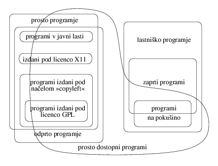

Tu je slovarèek razliènih kategorij programja, ki se pogosto omenjajo v razpravah o prostem programju. Razlaga katere kategorije se prekrivajo ali so del drugih kategorij.
Drugi sestavki za branje | ,,Prosto programje`` | ,,Odprto programje`` | ,,Programje v javni lasti`` | ,,Programi izdani pod naèelom ,,copyleft```` | ,,Prosto programje, ki ni izdano pod naèelom ,,copyleft```` | ,,Programi izdani pod licenco GPL`` | ,,Sistem GNU`` | ,,Programi GNU`` | ,,Programje GNU`` | ,,Napol-prosto programje`` | ,,Lastni¹ko programje`` | ,,Programi na poku¹ino`` | ,,Zastonjsko programje`` | ,,Komercialno programje`` | Drugi sestavki za branje
Zavedajte se tudi besed, ki povzroèajo zmedo in bi se jih morda raje izogibali.
 Ta diagram Chao-Kueia pojasnjuje razliène kategorije programja. Na voljo je kot datoteka za XFig, kot slika JPEG (21 Kb) in kot slika PNG (8 Kb).
Na voljo je tudi seznam prevodov izraza "prosto programje" v razliène druge jezike.
Èe je program prost, ga je potencialno mogoèe vkljuèiti v prost operacijski sistem, kot je GNU, ali proste razlièice sistema GNU/Linux.
Obstaja mnogo razliènih naèinov, da program postane prost -- mnogo je podrobnosti, ki so lahko re¹ene na veè kot en sam naèin, pa ¹e vedno naredijo program za prost. Nekaj mo¾nih variacij je opisanih spodaj.
Prosto programje je stvar prostosti, ne cene. Vendar podjetja, ki izdelujejo lastni¹ko programje, vèasih uporabljajo izraz ,,prosto programje``, ko govorijo o ceni. Vèasih s tem mislijo, da lahko dobite binarni izvod programa brezplaèno; vèasih mislijo, da je izvod vkljuèen v raèunalniku, ki ga kupujete. To nima nièesar opraviti s tem, kar pri projektu GNU razumemo pod pojmom prosto programje.
Zaradi te morebitne zmede vedno, kadar programska hi¹a pravi, da je njen izdelek prosto programje, preverite resniène pogoje za raz¹irjanje, da vidite, ali imajo uporabniki res vse svobo¹èine, ki jih implicira prosto programje. Vèasih je to res prosto programje; vèasih pa ne.
Mnogo jezikov ima dve razlièni besedi za ,,prosto`` kot v pojmu prostost in ,,prosto`` kot v pojmu prost vstop. Na primer, franco¹èina ima ,,libre`` in ,,gratuit``. Angle¹èina ima besedo ,,gratis``, ki se nedvoumno nana¹a na ceno, vendar nima uporabnega pridevnika, ki bi se nedvoumno nana¹al na prostost. To je ¾alostno, saj bi bila tak¹na beseda tu uporabna.
Prosto programje je pogosto bolj zanesljivo kot neprosto programje.
V nekaterih primerih je izvedljivi program lahko v javni lasti, vendar izvorna koda ni dostopna. To ni prosto programje, saj prosto programje zahteva dostopnost izvorne kode. Obenem veèina prostega programja ni v javni lasti; je pravno za¹èitena, in imetniki pravic raz¹irjanja so vsem dali pravno dovoljenje, da ga prosto uporabljajo, z uporabo proste programske licence.
Vèasih ljudje uporabljajo izraz ,,programje v javni lasti`` v ohlapnem pomenu, ko zares mislijo mean ,,prosto`` ali ,,na voljo zastonj``. Vendar je ,,javna last`` pravni izraz in pomeni, natanèno gledano, ,,ni pravno za¹èiten``. Zaradi jasnosti svetujemo, da uporabljate ,,javno last`` le v tem pomenu, in za opise drugih pomenov uporabljate druge izraze.
V projektu GNU izdamo pod naèelom ,,copyleft`` skoraj vse programje, ki ga napi¹emo, saj je na¹ cilj dati vsakemu uporabniku svobo¹èine, ki jih implicira izraz ,,prosto programje``. Za dalj¹o razlago o tem, kako deluje in kako uporabljamo ,,copyleft``, glejte spis Kaj je copyleft?.
Copyleft je splo¹no naèelo; èe ¾elite izdati program pod naèelom ,,copyleft``, morate uporabiti doloèen nabor pogojev raz¹irjanja. Obstaja mnogo naèinov kako napisati pogoje raz¹irjanja, skladne z naèelom ,,copyleft``, zato lahko v principu obstaja mnogo licenc prostega programja, skladnih s tem naèelom. Vendar v praksi skoraj vse programje, izdano pod naèelom ,,copyleft``, uporablja licenco GNU General Public License. Dve razlièni licenci vrste copyleft sta navadno ,,nezdru¾ljivi``, kar pomeni, da zdru¾evanje kode, ki uporablja eno licenco, s kodo, ki uporablja drugo licenco, ni zakonito; torej je dobro za skupnost, da ljudje uporabljajo eno samo licenco, skladno z naèelom ,,copyleft``.
Èe je program prost, vendar ni izdan pod naèelom copyleft, nekateri izvodi ali spremenjene razlièice morda sploh niso veè proste. Programska hi¹a lahko prevede program, s spremembami ali brez njih, in raz¹irja izvedljivo datoteko kot lastni¹ki programski izdelek.
To ponazarja okenski sistem X Window System. Konzorcij X izdaja X11 s pravicami raz¹irjanja, ki ga naredijo za prosto programje, ki ni izdano pod naèelom copyleft. Èe ¾elite, lahko dobite izvod, ki ima te pogoje raz¹irjanja in ta je prost. Vendar obstajajo tudi neproste razlièice, in za nekatere popularne delovne postaje in grafiène kartice za PC so te neproste razlièice edine, ki delujejo. Èe uporabljate to strojno opremo, X11 za vas ni prosto programje. Razvijalci X11 so X11 za nekaj èasa celo naredili za neprosto programje.
Unixu podoben sistem sestoji iz mnogih programov. Sistem GNU vkljuèuje vse programje GNU, kot tudi mnoge druge pakete, kot sta okenski sistem X in TeX, ki nista programje GNU.
Komponente za sistem GNU razvijamo in zbiramo od leta 1984; prva testna izdaja ,,popolnega sistema GNU`` je bila v letu 1996. Leta 2001 je sistem GNU z jedrom Hurd zaèel delati zanesljivo. Medtem je sistem GNU/Linux, veja sistema GNU, ki kot jedro uporablja Linux, v 1990-ih postal velika uspe¹nica.
Ker je cilj GNU ta, da je prost, mora biti vsaka posamezna komponenta sistema GNU prosto programje. Da bi veljale za prosto programje, pa ni treba, da bi bile vse izdane pod naèelom copyleft; pravno gledano je mogoèe vkljuèiti katerokoli prosto programje, èe pomaga izpolniti na¹e tehniène cilje. Lahko in tudi zares uporabljamo prosto programje, ki ni izdano pod naèelom ,,copyleft``, kot je okenski sistem X.
Èe je program del programja GNU, pravimo tudi, da je program GNU.
Nekatero programje GNU napi¹e osebje ustanove Free Software Foundation, vendar veèino programja GNU prispevajo prostovoljci. Nekaj prispevanega programja je pravno za¹èitila ustanova Free Software Foundation; nekaj so ga pravno za¹èitili njegovi pisci.
Napol-prosto programje je etièno mnogo bolj¹e kot lastni¹ko programje, a ¹e vedno poraja te¾ave, in ne moremo ga uporabljati v prostem operacijskem sistemu.
Omejitve naèela ,,copyleft`` so zasnovane, da za¹èitijo bistvene svobo¹èine vseh uporabnikov. Za nas je edino opravièilo za znatne omejitve pri rabi programa to, da prepreèimo drugim, da bi dodali nove omejitve. Napol-prosti programi imajo dodatne omejitve, motivirane s povsem sebiènimi cilji.
Napol-prostega programja ni moè vkljuèiti v prost operacijski sistem. To je zato, ker so pogoji raz¹irjanja za celoten operacijski sistem konjunkcija pogojev raz¹irjanja za vse programe v njem. Dodatek enega samega napol-prostega programa v sistem bi povzroèilo, da bi sistem kot celota postal le napol-prost. Dva razloga sta, da ne ¾elimo, da se to zgodi:
Sama ustanova Free Software Foundation je nekomercialna, in bi nam bilo torej pravno dovoljeno uporabljati napol-prosti program ,,interno``. Vendar tega ne poènemo, saj bi to spodkopavalo na¹a prizadevanja za pridobitev programa, ki bi ga ga lahko hkrati vkljuèili v GNU.
Èe kak¹na funkcionalnost sistema ¹e manjka, potem bo, dokler nimamo prostega programa, ki bi zapolnil vrzel, sistem GNU paè imel vrzel. Prostovoljcem moramo povedati: ,,Nimamo programa, ki bi v sistemu GNU naredil to in to, zato upamo, da ga boste napisali vi``. Èe bi mi sami uporabljali napol-prosti program, ki bi opravil to opravilo, bi to spodkopalo to, kar govorimo; odvzelo bi nam zagon (nam, in drugim, ki bi lahko prisluhnili na¹im stali¹èem), da bi napisali prosti nadomestek. Zato tega ne poènemo.
Ustanova Free Software Foundation upo¹teva pravilo, da na svoje raèunalnike ne moremo namestiti nobenega lastni¹kega programa, razen zaèasno za specifièen namen pisanja prostega nadomestka za prav ta program. Razen tega, se nam zdi, da ni mo¾nega opravièila za namestitev lastni¹kega programa.
V 1980-ih letih se nam je, na primer, zdelo upravièeno, da smo namestili Unix v svoj raèunalnik, saj smo ga uporabljali za pisanje prostega nadomestka za Unix. Dandanes, ko so dostopni prosti operacijski sistemi, ta izgovor ne velja veè; odstranili smo vse ne-proste operacijske sisteme, in vsak nov raèunalnik, ki ga namestimo, mora poganjati popolnoma prost operacijski sistem.
Ne vztrajamo, da morajo uporabniki sistema GNU ali avtorji prispevkov k temu sistemu, ¾iveti s tem pravilom. To je pravilo, ki smo ga postavili sebi. Vendar upamo, da se boste odloèili in mu tudi vi sledili.
Programje na poku¹ino ni niti prosto programje, niti napol-prosto. Dva razloga sta, da ni:
Na primer, GNU Ada se vedno raz¹irja pod pogoji GNU GPL, in vsak izvod je prosto programje; vendar njeni razvijalci prodajajo pogodbe za podporo. Ko njihovi prodajni zastopniki govorijo z morebitnimi kupci, vèasih kupci reèejo, ,,Varneje bi se poèutili s komercialnim prevajalnikom``. Prodajalec odgovori, ,,GNU Ada je komercialni prevajalnik; sluèajno je tudi prosto programje``.
Za projekt GNU je poudarek v drugem vrstnem redu; pomembno je, da je GNU Ada prosto programje; ali je komercialno ni kljuèno vpra¹anje. Vendar je hitrej¹i razvoj GNU Ade, ki je rezultat tega, da je komercialna, vsekakor koristen.
Prosimo pomagajte raz¹irjati zavest, da je komercialno prosto programje mogoèe. To lahko storite tako, da se potrudite in ne reèete ,,komercialno``, ko mislite ,,lastni¹ko``.
Vpra¹anja in naroèila, povezana s FSF in GNU, prosimo, po¹iljajte na gnu@gnu.org. Obstajajo tudi drugi naèini, da stopite v stik s FSF.
Prosimo, po¹ljite komentarje glede teh spletnih strani v angle¹èini na naslov webmasters@www.gnu.org, druga vpra¹anja pa na gnu@gnu.org.
Copyright © 1996, 1997, 1998, 2001 Free Software Foundation, Inc., 51 Franklin St, Fifth Floor, Boston, MA 02110, USA
Dobesedno prepisovanje in distribucija tega celotnega èlanka v kateremkoli mediju je dovoljena, èe je le ohranjeno to sporoèilo.
Verbatim copying and distribution of this entire article is permitted in any medium, provided this notice is preserved.
Osve¾eno Zadnja sprememba: petek, 26. decembra 2003 ob 23:50 (CET)
{kind=link}
{kind=link}